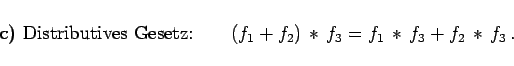

Inhalt Index DeskTop Bronstein

 Integraltransformationen Laplace-Transformation Eigenschaften der Laplace-Transformation Rechenregeln zur Laplace-Transformation
Integraltransformationen Laplace-Transformation Eigenschaften der Laplace-Transformation Rechenregeln zur Laplace-Transformation


Die Gleichung (15.21) wird auch einseitige Faltung im Intervall (0,t) genannt.
Eine zweiseitige Faltung tritt bei der FOURIER-Transformation (Faltung im Intervall ()) auf.
Die Faltung (15.21) besitzt die Eigenschaften
 |
(15.22a) |
 |
(15.22b) |
|  | (15.22c) |
Im Bildbereich entspricht der Faltung die gewöhnliche Multiplikation:
In der folgenden Abbildung ist die Faltung zweier Funktionen graphisch dargestellt.
Man kann den Faltungssatz zur Bestimmung der Originalfunktion wie folgt benutzen:
| (15.24) |
Die Integration erfolgt längs einer Parallelen zur imaginären Achse. Im ersten Integral müssen x1 und p so gewählt werden, daß z in der Konvergenzhalbebene von liegt und p-z in der Konvergenzhalbebene von . Entsprechendes gilt für das zweite Integral.